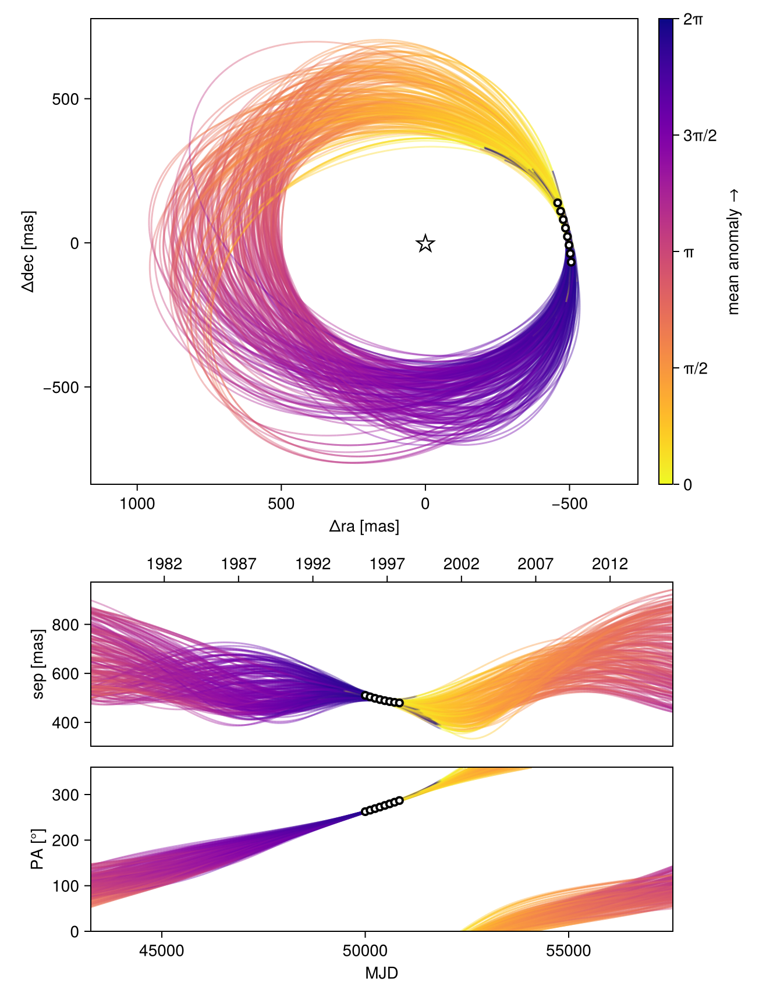
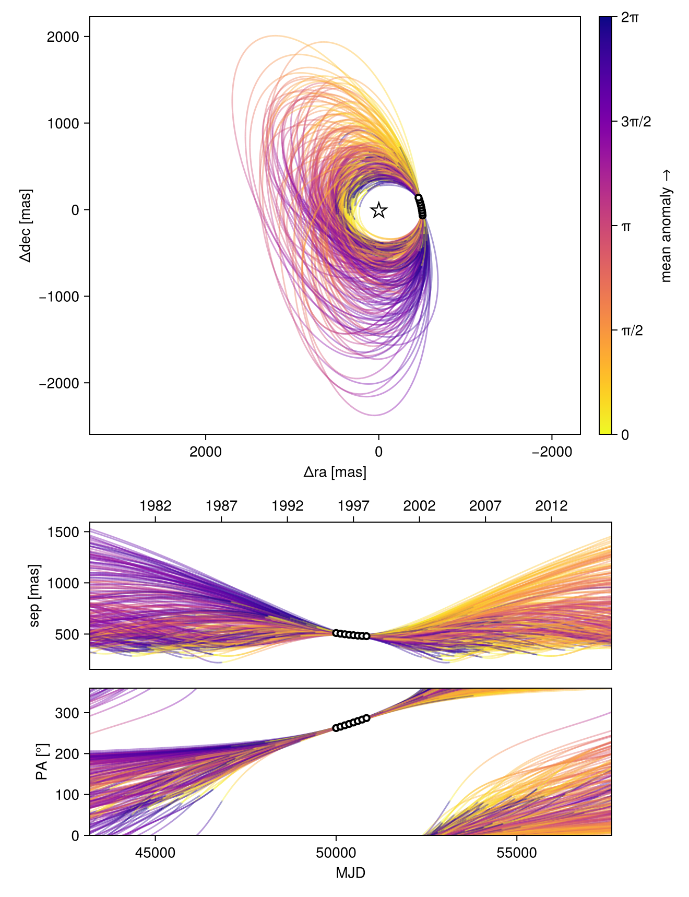
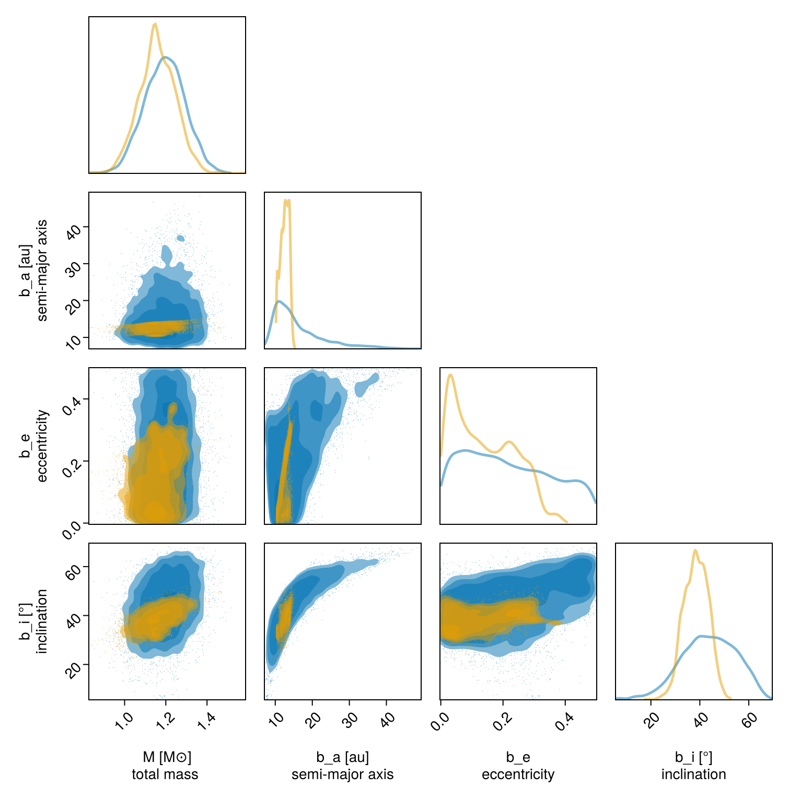

Observable-Based Priors
This tutorial shows how to fit an orbit to relative astrometry using the observable-based priors ofO'Neil et al. 2019. Please cite that paper if you use this functionality.
We will fit the same astrometry as in the previous tutorial, and just change our priors.
using Octofitter
using CairoMakie
using PairPlots
using Distributions
astrom_like = PlanetRelAstromLikelihood(
(epoch = 50000, ra = -505.7637580573554, dec = -66.92982418533026, σ_ra = 10, σ_dec = 10, cor=0),
(epoch = 50120, ra = -502.570356287689, dec = -37.47217527025044, σ_ra = 10, σ_dec = 10, cor=0),
(epoch = 50240, ra = -498.2089148883798, dec = -7.927548139010479, σ_ra = 10, σ_dec = 10, cor=0),
(epoch = 50360, ra = -492.67768482682357, dec = 21.63557115669823, σ_ra = 10, σ_dec = 10, cor=0),
(epoch = 50480, ra = -485.9770335870402, dec = 51.147204404903704, σ_ra = 10, σ_dec = 10, cor=0),
(epoch = 50600, ra = -478.1095526888573, dec = 80.53589069730698, σ_ra = 10, σ_dec = 10, cor=0),
(epoch = 50720, ra = -469.0801731788123, dec = 109.72870493064629, σ_ra = 10, σ_dec = 10, cor=0),
(epoch = 50840, ra = -458.89628893460525, dec = 138.65128697876773, σ_ra = 10, σ_dec = 10, cor=0),
)
@planet b Visual{KepOrbit} begin
e ~ Uniform(0.0, 0.5)
i ~ Sine()
ω ~ UniformCircular()
Ω ~ UniformCircular()
# Results will be sensitive to the prior on period
P ~ LogUniform(0.1, 50)
a = ∛(system.M * b.P^2)
θ ~ UniformCircular()
tp = θ_at_epoch_to_tperi(system,b,50420)
end astrom_like ObsPriorAstromONeil2019(astrom_like)
@system TutoriaPrime begin
M ~ truncated(Normal(1.2, 0.1), lower=0)
plx ~ truncated(Normal(50.0, 0.02), lower=0)
end b
model = Octofitter.LogDensityModel(TutoriaPrime)LogDensityModel for System TutoriaPrime of dimension 11 with fields .ℓπcallback and .∇ℓπcallback
Now run the fit:
using Random
Random.seed!(0)
results_obspri = octofit(model,iterations=5000,)Chains MCMC chain (5000×29×1 Array{Float64, 3}):
Iterations = 1:1:5000
Number of chains = 1
Samples per chain = 5000
Wall duration = 11.72 seconds
Compute duration = 11.72 seconds
parameters = M, plx, b_e, b_i, b_ωy, b_ωx, b_Ωy, b_Ωx, b_P, b_θy, b_θx, b_ω, b_Ω, b_a, b_θ, b_tp
internals = n_steps, is_accept, acceptance_rate, hamiltonian_energy, hamiltonian_energy_error, max_hamiltonian_energy_error, tree_depth, numerical_error, step_size, nom_step_size, is_adapt, loglike, logpost, tree_depth, numerical_error
Summary Statistics
parameters mean std mcse ess_bulk ess_tail ⋯
Symbol Float64 Float64 Float64 Float64 Float64 Flo ⋯
M 1.1589 0.0885 0.0030 841.4162 1337.2940 1. ⋯
plx 49.9999 0.0201 0.0004 2040.2440 2504.6483 1. ⋯
b_e 0.1392 0.0978 0.0095 106.1669 98.6716 1. ⋯
b_i 0.6709 0.0870 0.0048 337.4923 1543.2910 1. ⋯
b_ωy 0.7261 0.2975 0.0154 493.3967 965.9205 1. ⋯
b_ωx 0.5424 0.3071 0.0168 364.1457 1137.9427 1. ⋯
b_Ωy -0.4076 0.3504 0.0309 114.1756 64.7919 1. ⋯
b_Ωx -0.8025 0.2346 0.0126 436.3396 1675.4843 1. ⋯
b_P 41.4746 5.3150 0.5123 101.1368 46.2939 1. ⋯
b_θy 0.0736 0.0101 0.0005 337.1252 173.7669 1. ⋯
b_θx -0.9986 0.0986 0.0048 406.9616 1470.5653 1. ⋯
b_ω 0.6487 0.4361 0.0244 350.2227 1034.7566 1. ⋯
b_Ω -2.0422 0.4294 0.0369 109.4191 64.6283 1. ⋯
b_a 12.5534 1.1288 0.1083 98.5358 42.1001 1. ⋯
b_θ -1.4972 0.0074 0.0003 450.4495 197.3574 1. ⋯
b_tp 42278.1491 7280.4068 299.9834 600.1441 2133.6175 1. ⋯
2 columns omitted
Quantiles
parameters 2.5% 25.0% 50.0% 75.0% 97.5%
Symbol Float64 Float64 Float64 Float64 Float64
M 0.9858 1.1012 1.1557 1.2190 1.3326
plx 49.9606 49.9861 50.0000 50.0137 50.0388
b_e 0.0072 0.0490 0.1244 0.2198 0.3204
b_i 0.5013 0.6072 0.6724 0.7337 0.8263
b_ωy 0.0443 0.5493 0.8220 0.9341 1.1221
b_ωx 0.0075 0.3072 0.5100 0.8197 1.0677
b_Ωy -1.0116 -0.7340 -0.3209 -0.1433 0.1973
b_Ωx -1.1401 -0.9660 -0.8657 -0.6554 -0.2921
b_P 31.3723 37.3362 41.8428 45.9283 49.4487
b_θy 0.0538 0.0665 0.0734 0.0799 0.0950
b_θx -1.2017 -1.0645 -0.9893 -0.9266 -0.8298
b_ω 0.0078 0.3117 0.5441 0.9935 1.5269
b_Ω -2.8387 -2.4233 -1.9098 -1.7190 -1.3550
b_a 10.4234 11.6957 12.6503 13.4908 14.3907
b_θ -1.5117 -1.5019 -1.4971 -1.4922 -1.4826
b_tp 32802.2298 35307.8190 38965.7832 50188.4989 50399.2484
octoplot(model, results_obspri)
Compare this with the previous fit using uniform priors:
octoplot(model, results_unif_pri)
We can compare the results in a corner plot:
octocorner(model,results_unif_pri,results_obspri,small=true)